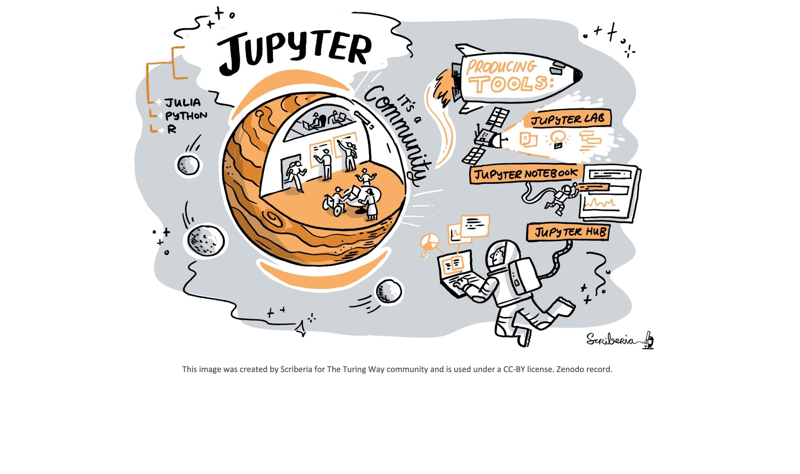
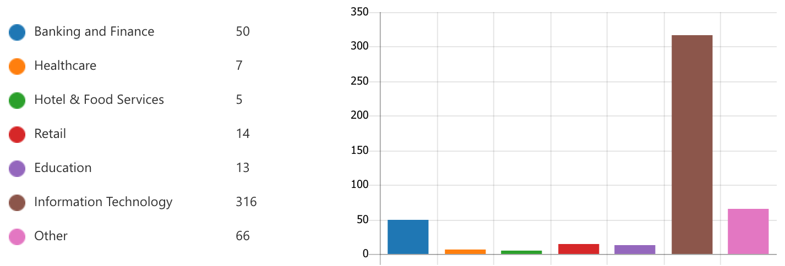
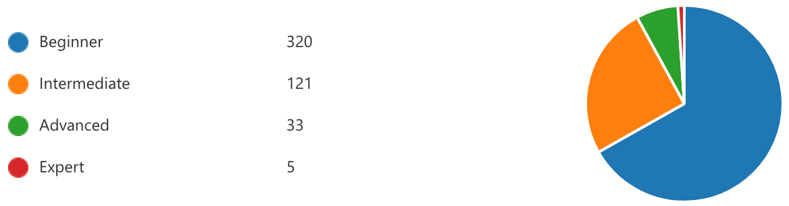
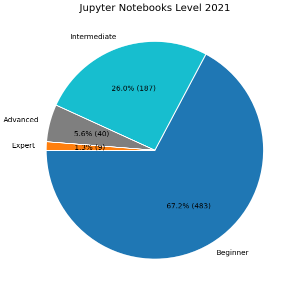
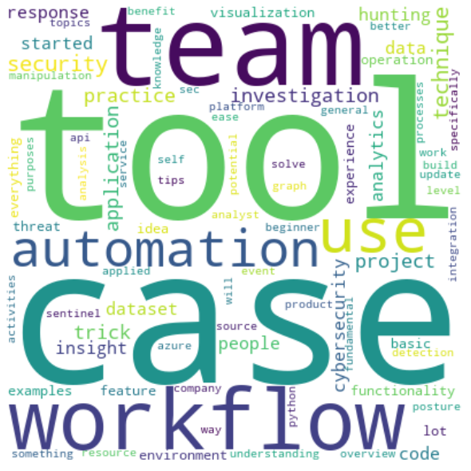

Welcome to the InfoSec Jupyterthon 2021!¶

Roberto Rodriguez @Cyb3rWard0g¶

Microsoft Threat Intelligence Center (MSTIC) R&D
I ❤️ Open Source
Read > Blog > Tweet > Repeat!
Founder of the Open Threat Research (OTR) Community!
Cooking Recipes: https://infosecwelldone.com/
Industry 2020¶

import pandas as pd
import altair as alt
alt.renderers.enable('default')
df = pd.read_csv("../data/InfosecJupyterthon2021-Stats.csv")
top_10 = df['Industry'].value_counts()[:10].to_frame().reset_index()
bars = alt.Chart(top_10, title='Industry 2021').mark_bar().encode(
x=alt.X('Industry', axis=alt.Axis(title='Count')),
y=alt.Y('index', axis=alt.Axis(title='Industry'), sort='-x'),
color=alt.Color('index', legend=None)
).properties(height = 350, width=600)
text = bars.mark_text(align='center',baseline='middle',dx=10,dy=0).encode(text='Industry')
bars + text
Jupyter Notebooks Level 2020¶

import pandas as pd
from matplotlib import pyplot as plt
import numpy as np
df = pd.read_csv("../data/InfosecJupyterthon2021-Stats.csv")
top_10 = df['JupyterNotebookLevel'].value_counts()[:10].to_frame().reset_index()
colors = ['tab:blue', 'tab:cyan', 'tab:gray', 'tab:orange', 'tab:red']
# Creating autocpt arguments
def func(pct, allvalues):
absolute = int(pct / 100.*np.sum(allvalues))
return "{:.1f}% ({:d})".format(pct, absolute)
fig, ax = plt.subplots(figsize =(10, 10))
ax.pie(top_10['JupyterNotebookLevel'],labels = top_10['index'],colors = colors,
autopct = lambda pct: func(pct, top_10['JupyterNotebookLevel']),
startangle=180,wedgeprops={'linewidth': 2.0, 'edgecolor': 'white'},textprops={'size': 'x-large'}
)
ax.set_title('Jupyter Notebooks Level 2021', fontsize=20)
plt.show()

What do you expect to learn about Jupyter Notebooks in this event?¶
import pandas as pd
import matplotlib.pyplot as plt
from wordcloud import WordCloud, STOPWORDS
df = pd.read_csv("../data/InfosecJupyterthon2021-Stats.csv")
expectations= df['Expectations'].dropna().values
tokens = list()
for line in expectations:
[tokens.append(token.lower()) for token in str(line).split()]
text = " ".join(i for i in set(tokens))
[STOPWORDS.add(n) for n in ['notebook', 'notebooks', 'jupyter', 'infosec', 'etc']]
wordcloud = WordCloud(
width=400,height=400,background_color='white',stopwords=set(STOPWORDS),min_font_size = 10
).generate(text)
plt.figure(figsize = (10, 8), facecolor = None)
plt.imshow(wordcloud, interpolation='bilinear')
plt.axis("off")
plt.tight_layout(pad = 0)
plt.show()

Housekeeping¶
📺 Recordings
Today’s event is being recorded.
Subscribe to OTR YouTube Channel: https://bit.ly/OTRYouTubeSub
⏳ Timekeeping
Timezone: Pacific Daylight Time (PDT)
Day 1
Workshop: 8:30:00 AM - 11:35 AM
Keynote: 11:40 AM
Presentations: 1:00 PM - 5:30
Day 2
Workshop: 8:30 AM - 12:10 PM
Presentations: 1:00 PM - 4:45 PM
🎙️ Virtual Conversations
OTR Discord Automatic Invite: https://discord.com/invite/efBGmbQ
Channel:
jupyterthon
👍 Social Media
Twitter Handle: @jupyterthon
Hashtag: #infosecjupyterthon
We would like to know where you are joining us from! 🌎